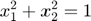
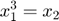
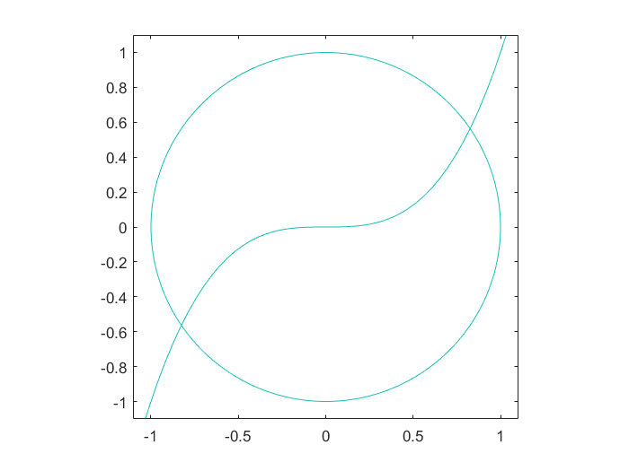

Sisteme de ecuatii neliniare
Metoda lui Newton
Vom rezolva sistemul


Contents
Codul pentru metoda lui Newton
function [z,ni]=Newtonsyst(f,fd,x0,ea,er,nmax) %Newtonsyst - metoda lui Newton pentru ecuatii neliniare in R si R^n %apel [z,ni]=Newton(f,fd,x0,ea,er,nmax) %Intrare %f - functia %fd - derivata %x0 - aproximatia initiala %ea - eroarea absoluta %er - eroarea relativa %nmax - numarul maxim de iteratii %Iesire %z - aproximatia radacinii %ni - numarul de iteratii
if nargin < 6, nmax=50; end
if nargin < 5, er=0; end
if nargin < 4, ea=1e-3; end
xp=x0(:); %x precedent
for k=1:nmax
xc=xp-fd(xp)\f(xp);
if norm(xc-xp,inf)<ea+er*norm(xc,inf)
z=xc; %succes
ni=k;
return
end
xp=xc;
end
error('S-a depasit numarul maxim de iteratii');Definim functia si derivata
f = @(x) [x(1)^2+x(2)^2-1; x(1)^3-x(2)]; df = @(x) [2*x(1), 2*x(2); 3*x(1)^2, -1];
Determinarea solutiilor
x0=[1;1]; ea=1e-8; er=0; nmax=20; [z,ni]=Newtonsyst(f,df,x0,ea,er,nmax) x0=[-1,-1]; [z2,ni2]=Newtonsyst(f,df,x0,ea,er,nmax)
z =
0.8260
0.5636
ni =
5
z2 =
-0.8260
-0.5636
ni2 =
5
Interpretare geometrica
clf x=linspace(-1.1,1.1,50); [X,Y]=meshgrid(x); Z1=X.^2+Y.^2-1; Z2=X.^3-Y; contour(X,Y,Z1,[0,0]); hold on contour(X,Y,Z2,[0,0]); hold off axis equal